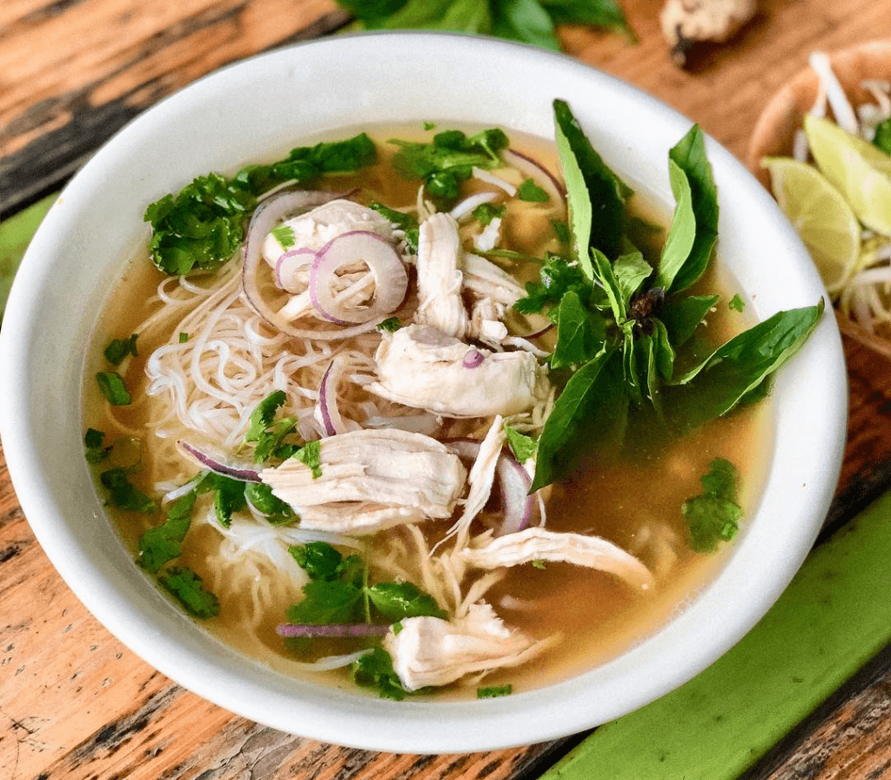

Chicken Pho

Description
Chicken pho (Pho Ga) is an alternative bowl of
the Beef pho, has the same taste and it is much
easier to make. The magic of pho is that it
is filled with infused flavours, that makes
a person come back for more. If you are a fan
of pho, you will love the chicken version because
it is easier to make than beef pho
Ingredients
- 10 quarts water
- 3 lb chicken bones
- 1 whole chicken
- 1 medium onion
- 1(1 inch) piece ginger
- 1(32 fluid ounce) container chicken broth
- 0.25 cup rock sugar
- 3 teaspoons fish sauce
- 2 cubes pho ga soup seasoning
- 1.5 teaspoons salt
- 2(16 ounce) packages rice stick noodles
- 0.5 pound bean sprout
- 1 bunch green onion, chopped
- 1 bunch cilantro, chopped
- 6 sprigs Thai basil, or as needed
- 1 lime, cut in wedges